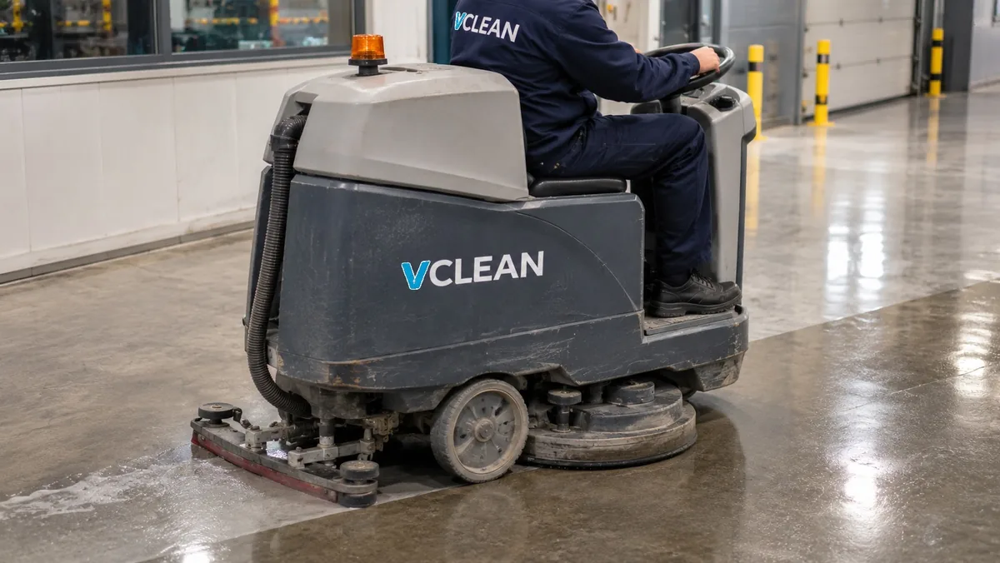

Dienst · Industrie
Dieptereiniging en grote kuis
Soms is vast onderhoud niet genoeg. Een stilstand, een audit, een nieuwe huurder of gewoon een achterstand: dan plannen we een grondige reiniging, eenmalig of een paar keer per jaar.

Wat we doen
De precieze taken leggen we samen vast. Dit is een vertrekpunt.
- Hallen, stellingen en moeilijk bereikbare plaatsen
- Wanden, deuren en verlichting
- Kantines en sanitair grondig ontkalken en ontvetten
- Ingepland tijdens een stilstand of in het weekend
Geef dit mee bij je aanvraag
Zo kunnen we sneller een voorstel maken.
- Wat er moet gebeuren en tegen wanneer
- Of er hoogtewerk bij komt
- Wanneer de ruimte vrij is
Intern: bevestigen of V CLEAN deze dienst zelf uitvoert of via een partner [IN TE VULLEN: dienst bevestigen]
Andere diensten
Vertel ons over je locatie.
We bekijken wat er moet gebeuren en bezorgen je een voorstel op maat.